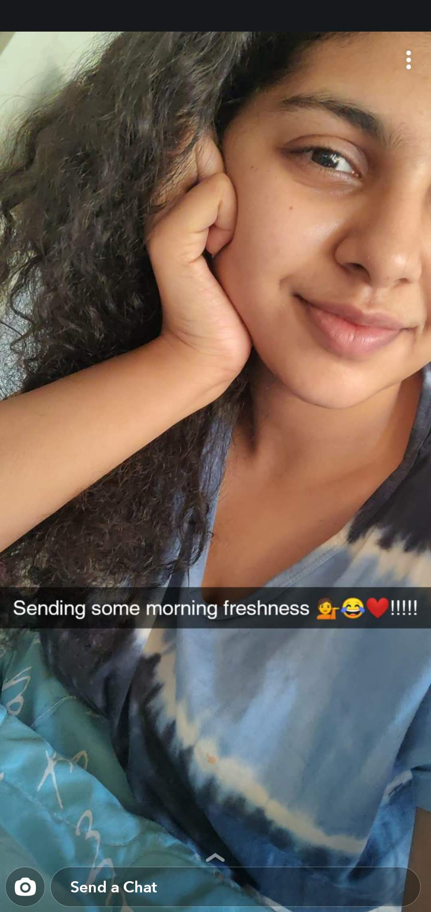
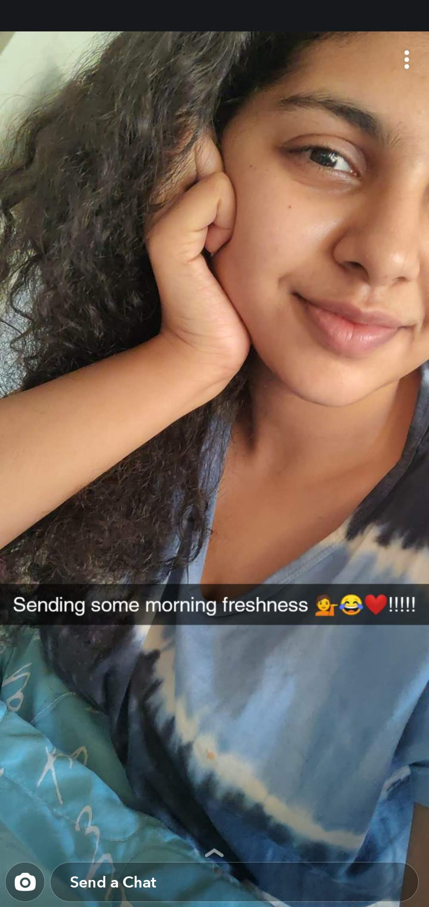
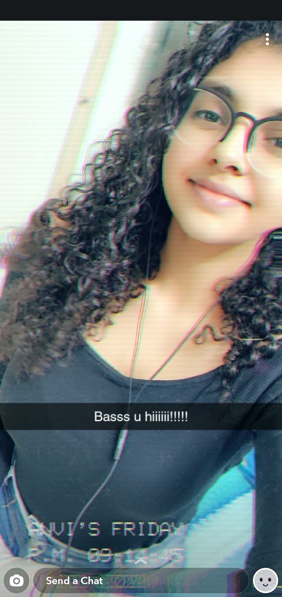
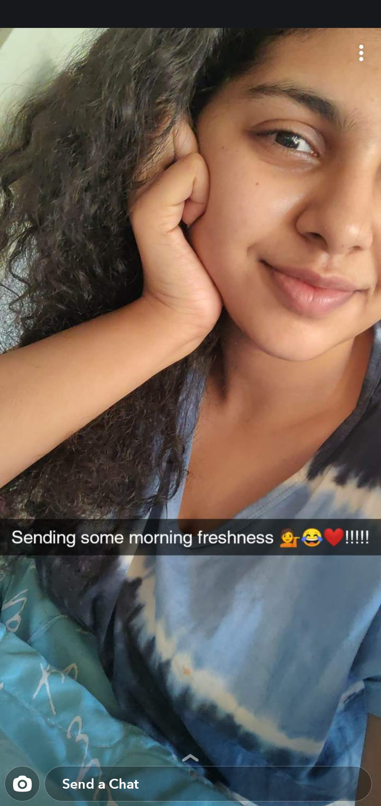

Anvitha's Hall Of Fame


 


Fun fact: Long term friendships blossom online. üòÇI cannot believe this was the first message i sent you with a hot steaming gif of Joe Goldberg bhaiyya. To which you replied "Creep", in that moment moment i knew what a tatti first impression that was but it was one that actually led to the foundation of our friendship, "Joe chicha".
On the other hand one of his Quotes in the show also says "Social networks make you vulnerable and offer nothing in return" Well this line is partially true.. you kind of made me believe this statement.. only change being: there was a lot to offer in return!. We've come a long way Anvitha. It's still hard to digest that the first show we binge watched together was YOUüòÇüòÇ. Katay khatarnak.
Over the time I've come to realise that I'm better at expressing what i feel in words by writing them down and you obviously by saying it out loud. Time and again it just felt like we're poles apart whether be it food choices or when you once asked me to choose between beaches or mountains, btw i still have no clue what you assessed from all those questions üòÇ. Dude the only thing that we can agree to and share in common is our music taste and GOD I'm so thankful for that. You know there's a saying that 'We don't meet people by accident, they're meant to cross our path..' but our meeting was neither an accident nor did we cross our path üòÇ Par ye jo omkar ka outstanding chutiyap tha, that's led to something sooo beautiful and unique in my life that even right now I am finding it very difficult to explain. It's nothing short of magic when i say that the first time you sent a voice note or the first time we played pubg, when you introduced me to anna and panda.. all these times i got.. you know what do they say.. butterflies in the stomach wala feeling. STOP LAUGHING.
Okay so by far you should already know this is basically a long ass appreciation post/webpage/gift in a way.. your TATTI ASS deserves this.
I am not kidding when i say, i do not open up to people.. but they open up very easily to me.. although it was not as straight with you.. I've maybe said this before and I'll say it again. you're a tough nut to crack and no! not a compliment poopie. I don't intend to worship you with words but i cannot stress enough to tell you that you are Ambitious, Charming and Honest. Above all.. You keep everyone and everything else that you Love always before you. I mean these are some of the most admirable qualities any human could have. Yes you have your plate full at times in a lot of places and cannot do all of those things at once yet somehow you manage to not make a single person feel left out.
From chatting on texts to talking on calls, to spending random time videocalling each other, watching you make maggi or coffee 3 am at night and Completely shadowing You while talking to anna till 6am üòÇ. I have thoroughly enjoyed every moment spent because i NEVER felt out of place or unwelcomed.
The other day you said you don't know me completely, maybe that's true.. there are sides and stories about you that i still don't have the faintest idea about.But Anvitha Shetty, you.. as a person, I understand you. Which is enough for me to just - without wasting a second i can gather some words and try to put a smile on your face to get you back to normal when you're feeling down. There are times when i do think about how it would be if we just stopped talking and the thought of it itself feels absurd. üòÇ Because even if we don't speak.. wo Goodmorning, Goodnight toh itna standard ho gaya hai... ki bina wo bole neend bhi nahi ayegi ab.
I cannot be more grateful to you when you gave me the space i wanted when i needed it and also were there to speak with me and understand me genuinely. Others just said time ke saath sab theek ho jayega but you were more practical about it and told me to cry it out and said stuff that i honestly wanted to hear. Maybe i am not justifying everything enough with these words but you just mean a lot to me.
Talking about butterflies in the stomach, well 2086 media items, approximately 10 months and hundreds of minutes of voice calls, changing your name atleast 10 times on my phone later.. the second you texted "I'm in the lift" the other day, i had butterflies in my stomach again. I was nervous as much as you were but the minute you sat in the car and said Hi, it felt like it all came a full circle. üòÇOkay i think it's time where i stop blabbering and let you go explore this noob webpage a bit more. Cheerios Piggie üê∑üñ§

So basically, aapko itna kumbhkaran ki tarah sote hue dekh hume laga thodi mehenat karva leni chahiye mohtarma se!
Following are some Questions, when answered correctly will.... ...umm khud hi dekh lo.